Reference · All 22 arcana
The 22 Arcana of the Destiny Matrix
Every number in your chart is one of the 22 Major Arcana, from the Magician (1) to the Fool (22). Numbering follows the Tarot de Marseille: 8 is Justice, 11 is Strength.
1. The Magician

Keywords: will, skill, beginning.
You start things with your own hands — an idea becomes a plan, and a plan becomes a first step. People with this arcana in a strong position tend to be quick to act, good with words and tools, and impatient with long meetings about things they could simply try. The gift here is initiative: an idea becomes a plan, a plan becomes a first step, and the first step teaches more than another month of thinking.
2. The High Priestess
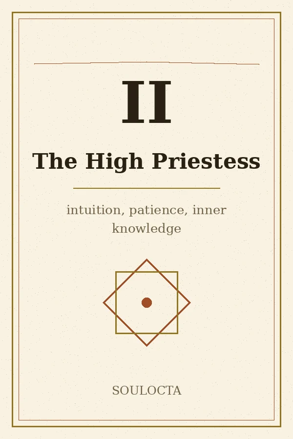
Keywords: intuition, patience, inner knowledge.
You often know things before you can explain how — you notice what is not being said. This is not the loud confidence of the Magician, but the slower kind: noticing what is not being said, remembering what others forget, and waiting until the right moment to speak. People with this arcana often know things before they can explain how they know them, and they are usually right more often than they expect.
3. The Empress

Keywords: growth, care, abundance.
You make things grow: people, projects, and rooms you walk into feel warmer with you in them. She is the gardener, the host, the parent, the friend who feeds people properly and remembers what they like. Where the Empress sits in a chart, life tends to grow: projects, relationships, families, and businesses all do better with steady attention and real warmth.
4. The Emperor

Keywords: structure, order, authority.
You are at your best when life has clear rules, honest limits, and a plan that actually holds. Where this arcana sits, life asks for clear rules, honest limits, and a plan that actually holds. People with the Emperor strong in their chart are often good at organising others, keeping their word, and building things that last: a business, a home, a routine, a team.
5. The Hierophant

Keywords: tradition, learning, guidance.
You learn best from a teacher, a method, and doing things properly — then you pass it on. This arcana values doing things properly: learning from a teacher, respecting the method, and understanding why a rule exists before breaking it. People with the Hierophant strong in their chart often make good teachers, mentors, and keepers of standards.
6. The Lovers
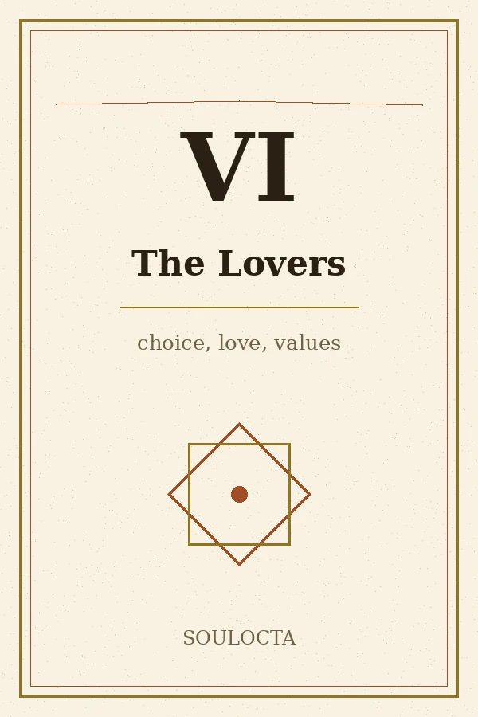
Keywords: choice, love, values.
You live by what you value, and the people closest to you help you see yourself clearly. Despite the name, it is not only about romance. It is about the moments when you must choose between what is easy and what is true, and about the people who help you see yourself clearly.
7. The Chariot
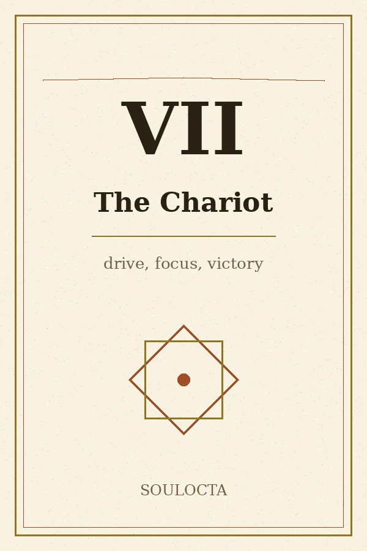
Keywords: drive, focus, victory.
You move forward by choosing one direction and staying on it, even when the road gets rough. It is the arcana of the person who sets a goal, gathers their energy, and keeps going when the road gets rough. Where the Chariot sits in a chart, progress comes from direction, not from rushing in every direction at once.
8. Justice

Keywords: balance, truth, fairness.
You weigh things honestly — you want a fair outcome, even when it is uncomfortable. It is the arcana of weighing things honestly, seeing both sides, and living with the consequences of your choices. People with Justice strong in their chart tend to be fair-minded, clear-headed, and uncomfortable with dishonesty, even small dishonesty.
9. The Hermit
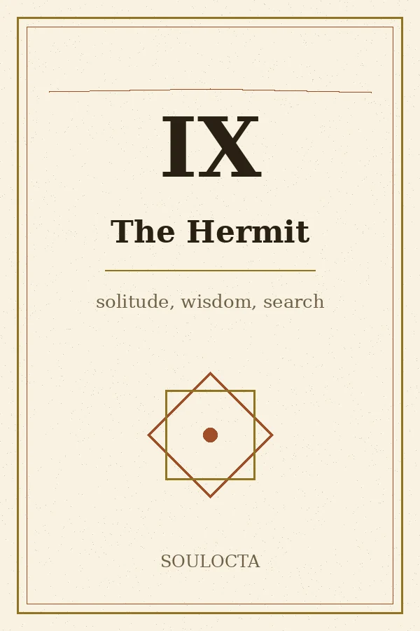
Keywords: solitude, wisdom, search.
You find your answers in quiet: a walk, a book, time alone with your own thoughts. This is the arcana of the person who steps back from noise, thinks deeply, and returns with something worth saying. Where the Hermit sits in a chart, answers come slowly and from within: through reading, walking, working alone, and paying attention to your own life.
10. Wheel of Fortune
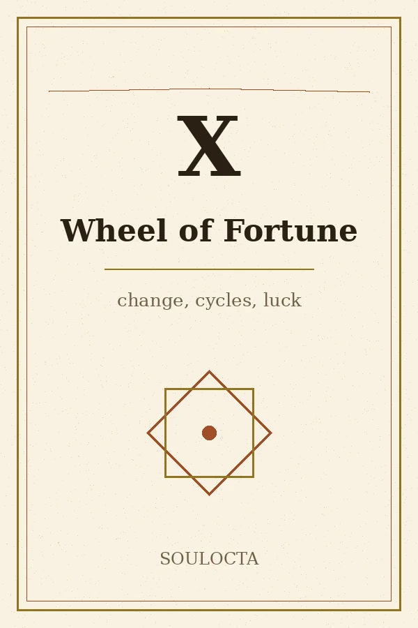
Keywords: change, cycles, luck.
Your life moves in turns — good periods follow hard ones, and nothing stays the same for long. It reminds us that life moves in turns: good periods follow hard ones, and hard ones follow good ones, often without warning. People with this arcana strong in their chart often live through sharp changes of fortune, and they learn, sometimes the hard way, that nothing stays the same.
11. Strength
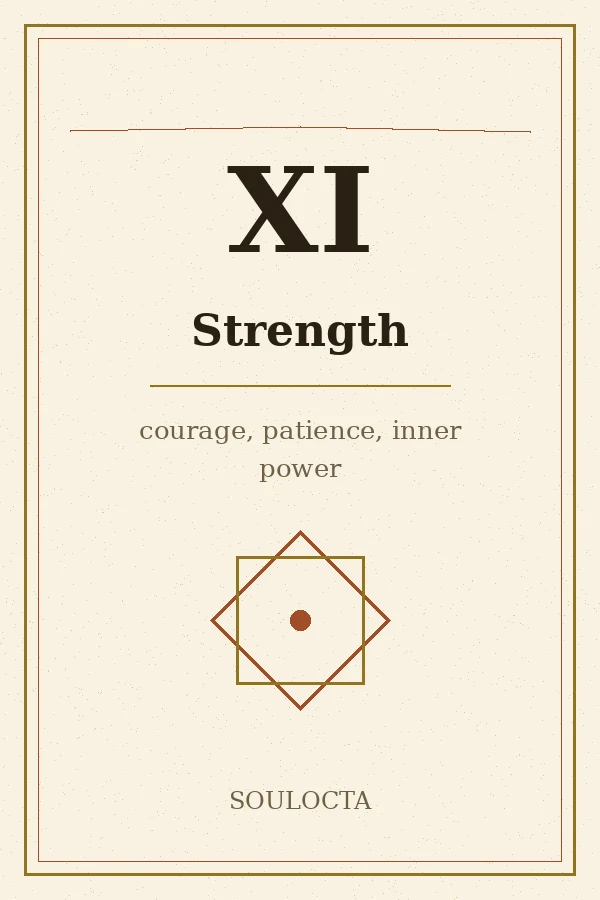
Keywords: courage, patience, inner power.
Your strength is quiet: you stay calm, keep going, and carry more than people realise. It is not the loud strength of force, but the steady strength of the person who stays calm, keeps going, and tames their own fears instead of fighting everyone else. People with Strength in their chart often carry more than others realise, and they do it without drama.
12. The Hanged Man

Keywords: pause, new view, surrender.
You are in a pause right now — pushing harder will not help, and looking at it differently will. It appears when pushing harder will not help, and the only useful move is to stop, look at the situation upside down, and wait. People with this arcana in their chart often learn through delays, detours, and periods when life seems stuck.
13. Death

Keywords: ending, change, rebirth.
Something in your life has finished, and this arcana is about letting it end cleanly so something new can begin. It is one of the most misunderstood arcana, because it rarely means a physical death. It means that something has finished: a job, a relationship, a belief, a way of life.
14. Temperance
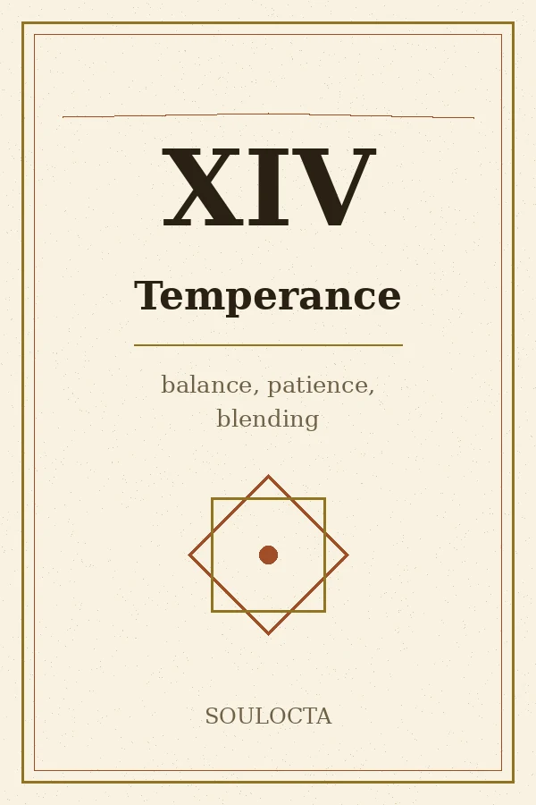
Keywords: balance, patience, blending.
You do your best work in the middle path — not too much, not too little, steady over time. It is the arcana of the middle path: not too much and not too little, not rushing and not stalling, mixing work and rest, giving and receiving, until life feels steady. People with Temperance strong in their chart are often good at healing, mediating, and making difficult things work over time.
15. The Devil
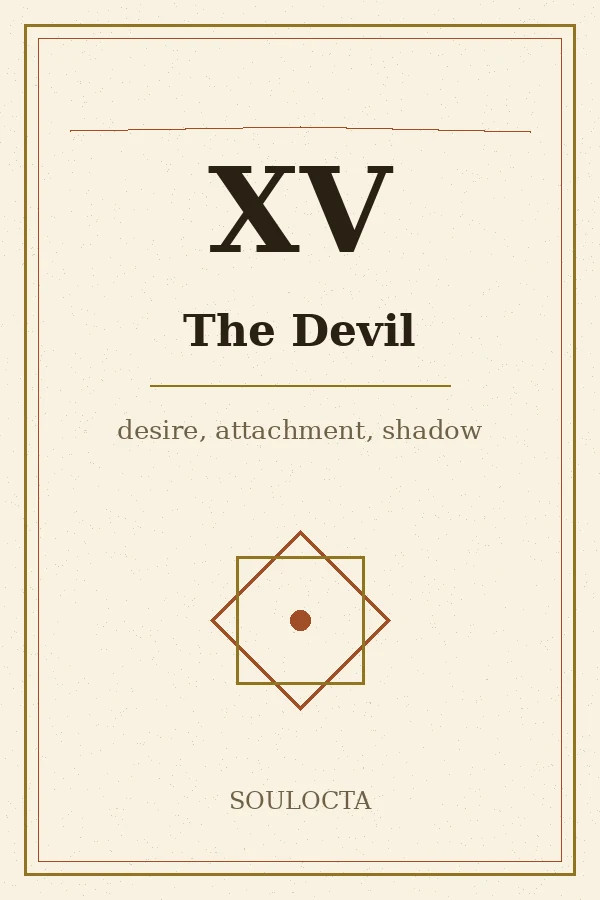
Keywords: desire, attachment, shadow.
You want something badly enough that it is starting to own you — and you know exactly what it is. It points to the things that hold us: money, status, pleasure, control, a habit, a person, a fear. Where the Devil sits in a chart, there is usually a strong pull towards something that feels good in the moment and costs too much over time.
16. The Tower
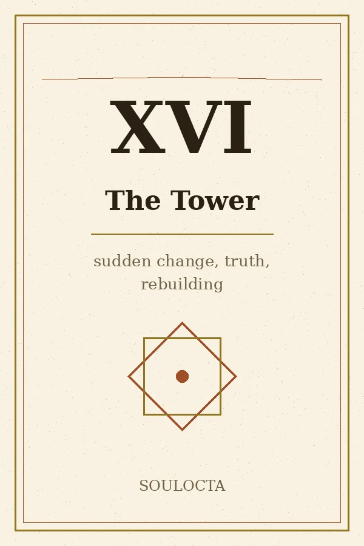
Keywords: sudden change, truth, rebuilding.
Something false in your life is collapsing, and once it falls you will finally see clearly. It is the arcana of the moment when something false collapses: a plan that was never going to work, a relationship built on pretence, a belief that could not hold. Where the Tower sits in a chart, change often arrives fast and without permission.
17. The Star

Keywords: hope, healing, guidance.
You are coming out of a hard period, and hope is returning — quietly, but for real. It often follows a hard period, like the calm after a storm, when you can finally see clearly and believe that things can get better. Where the Star sits in a chart, there is a sense of direction: a dream, a calling, a simple hope that keeps you going.
18. The Moon
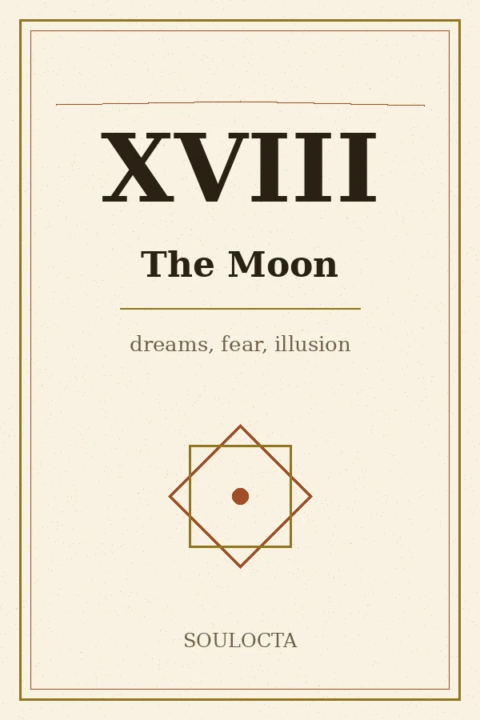
Keywords: dreams, fear, illusion.
You feel things deeply and sense what others miss — but right now, not everything you feel is true. It is the arcana of the night: things are not what they seem, feelings run deep, and the imagination can be a gift or a trap. Where the Moon sits in a chart, life often feels uncertain.
19. The Sun

Keywords: joy, clarity, success.
You are at your brightest when you are direct, warm, and willing to be seen. It is the brightest arcana, and where it sits in a chart, life tends to go well: things become clear, work bears fruit, and people enjoy being around you. The gift is warmth.
20. Judgement
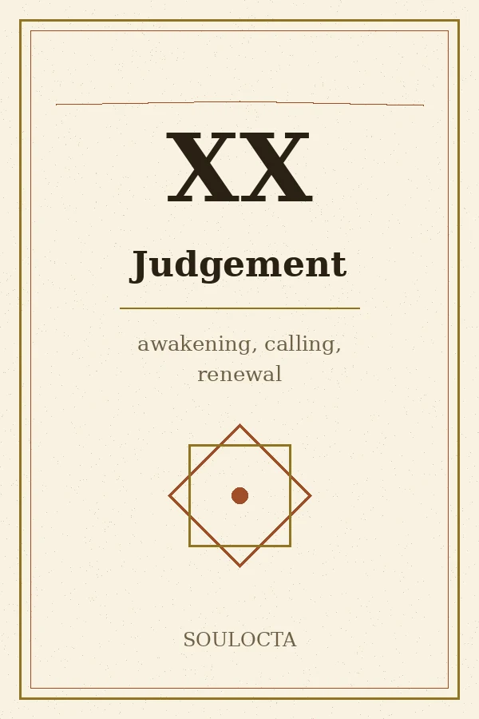
Keywords: awakening, calling, renewal.
You are hearing something clearly about yourself — a truth, a call, a second chance. It is the arcana of the moment when you hear something clearly — a truth about yourself, a call to change, a chance to start again — and you cannot pretend you did not hear it. Where Judgement sits in a chart, life asks for an honest review: what have you done, what have you learned, and what will you do differently now?
21. The World
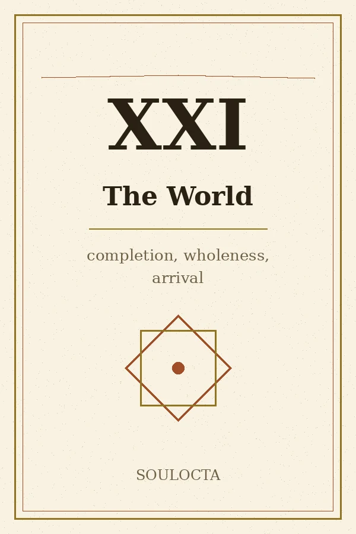
Keywords: completion, wholeness, arrival.
You have come full circle: something long is finished, and you understand how the pieces fit. It is the last numbered arcana before the Fool, and it marks the end of a long journey: the degree finished, the business built, the healing done, the circle closed. Where the World sits in a chart, there is a sense of having come full circle, of understanding how the pieces fit together.
22. The Fool
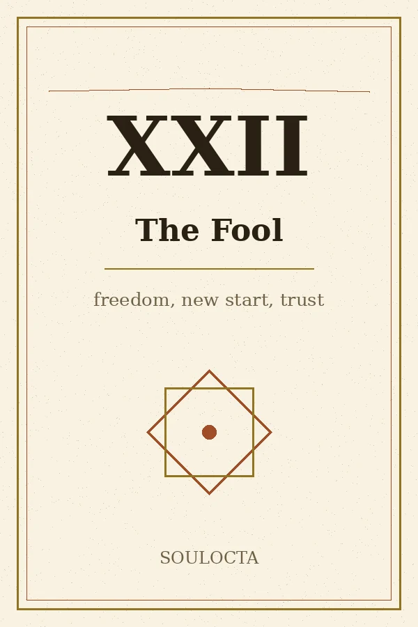
Keywords: freedom, new start, trust.
You are standing at the start of something new, and the brave move is to take the first step. It is numbered 22 in this system, the last arcana and also the beginning of a new cycle. Where the Fool sits in a chart, life asks you to step forward without knowing everything, to trust yourself, and to begin.
Related guides
Keep reading: destiny matrix vs numerology · destiny matrix vs tarot · destiny matrix for beginners · destiny matrix FAQ · the Chariot, arcana 7 of the Destiny Matrix · Justice, arcana 8 of the Destiny Matrix · the Lovers, arcana 6 of the Destiny Matrix · the Devil, arcana 15 of the Destiny Matrix · the Sun, arcana 19 of the Destiny Matrix · karmic tail 18-6-6, Love Magic · karmic tail 15-20-5, the Rebel · karmic tail 9-9-18, Magical Knowledge · the Magician, arcana 1 of the Destiny Matrix · the Empress, arcana 3 of the Destiny Matrix · the Emperor, arcana 4 of the Destiny Matrix · the Wheel of Fortune, arcana 10 of the Destiny Matrix · Strength, arcana 11 of the Destiny Matrix · the World, arcana 21 of the Destiny Matrix · karmic tail 15-8-11, Physical Suffering · karmic tail 21-4-10, Oppressed Soul · karmic tail 12-19-7, Warrior · karmic tail 6-17-11, Wasted Talent · all 22 arcana meanings · all karmic tail guides · Destiny Matrix compatibility calculator · what is the Destiny Matrix · how to calculate the Destiny Matrix.
Frequently asked questions
How many arcana are in the Destiny Matrix?
There are 22, one for each Major Arcana, from the Magician (1) to the Fool (22). The same arcana can appear in more than one position.
Why is 8 Justice and 11 Strength here?
This site follows the Tarot de Marseille numbering, where 8 is Justice and 11 is Strength. Some modern decks swap those two around.
What does it mean if the same arcana appears twice in my chart?
It usually means that theme is strong in your life. A repeated arcana is worth reading carefully, because it shows up in more than one area.
Are some arcana good and some bad?
No — every arcana has a light side and a shadow side. The Devil, the Tower and Death describe desire, sudden change and endings.